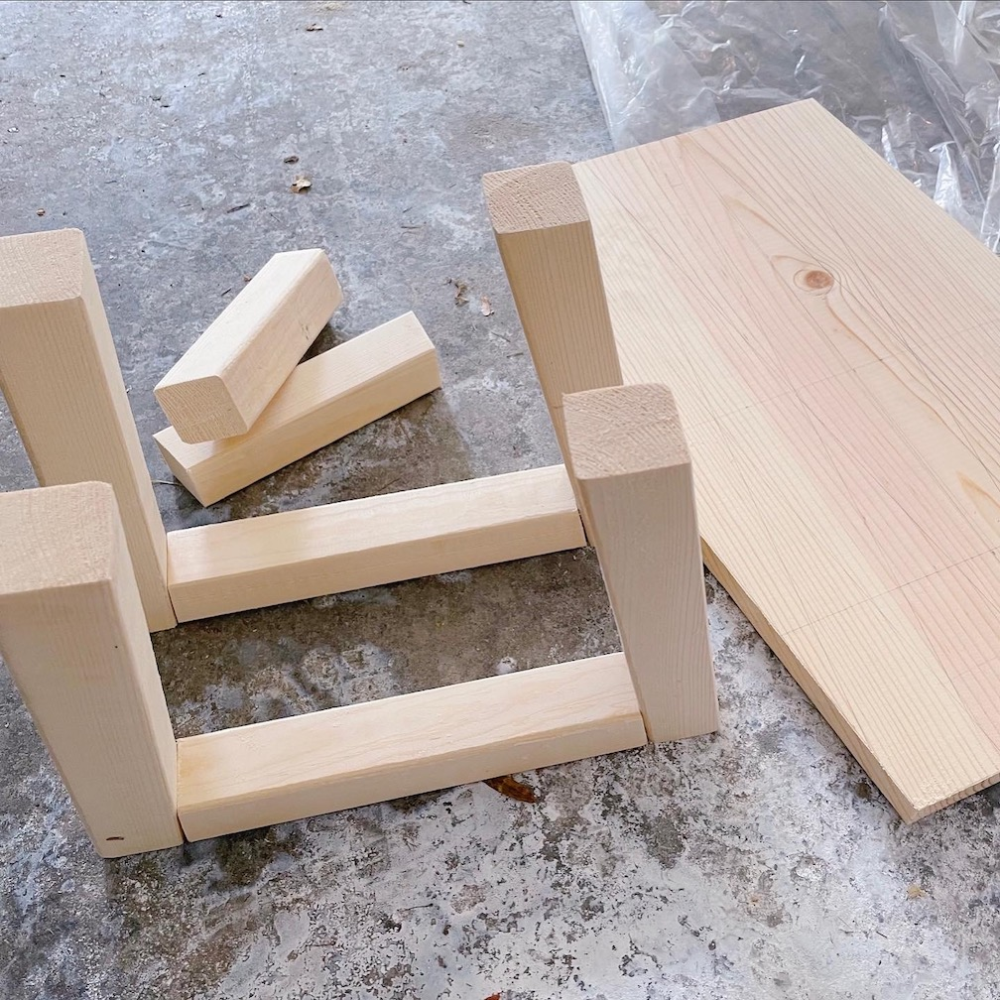
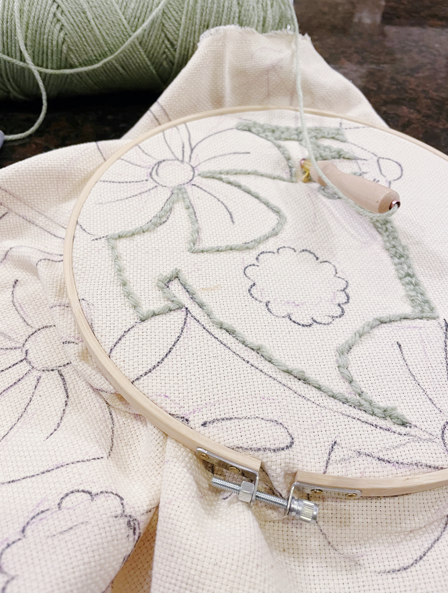
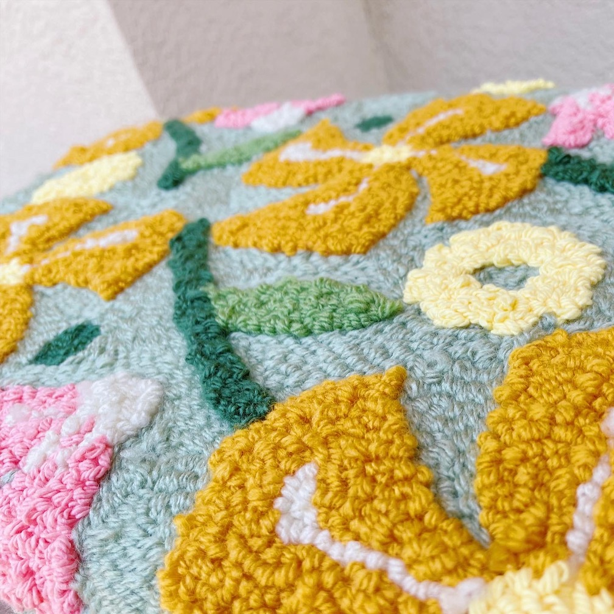
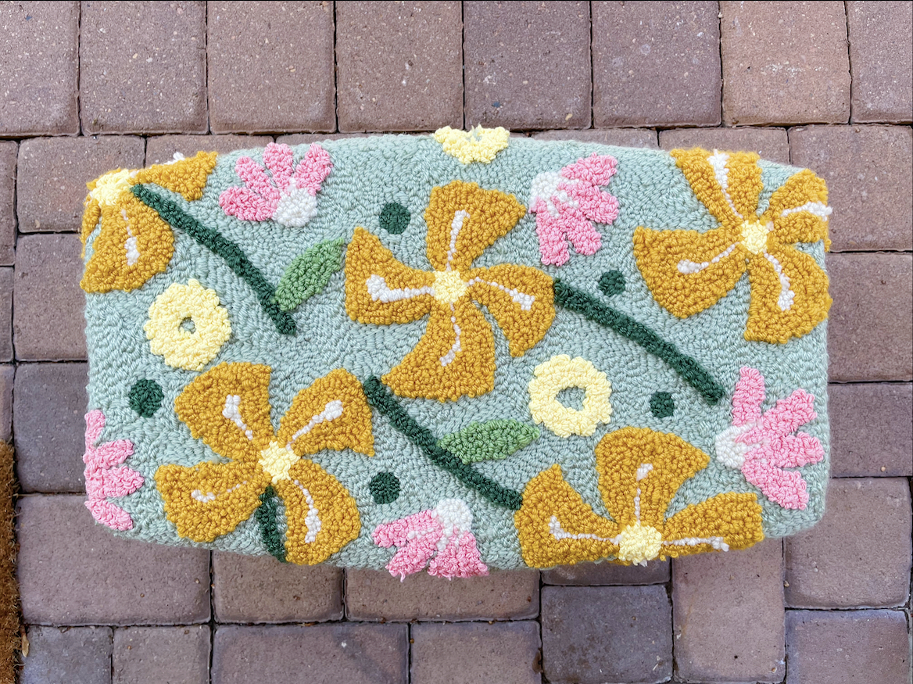

Springtime
I had the joy of staying home with my family in Kansas for a few months while working remotely during the COVID-19 pandemic. We spent countless evenings playing my brother's favorite game, Monopoly, which usually lasted 3+ hours per game since no one could admit they had lost haha! My mom mentioned at one point that her Rubbermaid step stool she was sitting on during these long games was giving her some back pain since it was a bit too low. As a thank-you gift for the wonderful time at home, I made this "Springtime" stool that gave some extra cushioning and comfort at the perfect height.
I made this stool from a 2x2x8 and 1/2 in. piece of plywood. I didn't make a sketch beforehand, but I knew I wanted something a little funkier than a standard boxy stool. The seat is a stretched hexagonal shape and the legs are slightly angled to create a trapezoid.

The punch needled cushion took the longest -- I initially used an embroidery hoop but soon made a small wooden frame for the cushion. I wanted the flowers to feel slightly raised above the green grass background, so I punch needled the background and foreground on separate sides of the fabric

Close-up view of the "Springtime" pattern. I used the Airtex 2" High Density Foam for the cushion and used a staple gun to attach the fabric to the wood

Top view of the stool

Previous Project
Ode to Metro
Next Project
Pilot